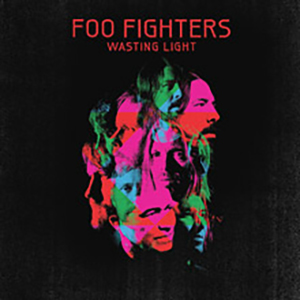

Foo Fighters(1995)

| No. | Title | Length |
| 1. | "This Is a Call" | 3:53 |
| 2. | "I'll Stick Around" | 3:52 |
| 3. | "Big Me" | 2:12 |
| 4. | "Alone+Easy Target" | 4:05 |
| 5. | "Good Grief" | 4:01 |
| 6. | "Floaty | 4:30 |
| 7. | "Weenie Beenie" | 2:46 |
| 8. | "Oh, George" | 3:00 |
| 9. | "For All of The Cows" | 3:30 |
| 10. | "X-Static" | 4:13 |
| 11. | "Wattershed" | 2:16 |
| 12. | "Exhausted" | 5:45 |
The Colour and the Shape(1997)

| No. | Title | Length |
| 1. | "Doll" | 1:23 |
| 2. | "Monkey Wrench" | 3:51 |
| 3. | "Hey, Johnny Park!" | 4:08 |
| 4. | "My Poor Brain" | 3:33 |
| 5. | "Wind Up" | 2:32 |
| 6. | "Up in Arms" | 2:15 |
| 7. | "My Hero" | 4:20 |
| 8. | "See You" | 2:26 |
| 9. | "Enough Space" | 2:37 |
| 10. | "February Stars" | 4:49 |
| 11. | "Everlong" | 4:10 |
| 12. | "Walking After You" | 5:03 |
| 13. | "New Way Home" | 5:40 |
There is Nothing Left to Lose(1999)

| No. | Title | Length |
| 1. | "Stacked Actors" | 4:17 |
| 2. | "Breakout" | 3:21 |
| 3. | "Learn to Fly" | 3:58 |
| 4. | "Gimme Stiches" | 3:42 |
| 5. | "Generator" | 3:48 |
| 6. | "Aurora" | 5:49 |
| 7. | "Live-In Skin" | 3:52 |
| 8. | "Next Year" | 4:37 |
| 9. | "Headwires" | 4:37 |
| 10. | "Aint it the Life" | 4:10 |
| 11. | "M.I.A." | 4:03 |
One By One (2002)

| No. | Title | Length |
| 1. | "All My Life" | 4:23 |
| 2. | "Low" | 4:28 |
| 3. | "Have it All" | 4:58 |
| 4. | "Times Like These" | 4:26 |
| 5. | "Disenchanted Lullaby" | 4:33 |
| 6. | "Tired of You" | 5:12 |
| 7. | "Halo" | 5:06 |
| 8. | "Lonely as You" | 4:37 |
| 9. | "Overdrive" | 4:30 |
| 10. | "Burn Away" | 4:59 |
| 11. | "Come Back" | 7:49 |
In Your Honor (2005)
| No. | Title | Length |
| 1. | "In Your Honor" | 3:50 |
| 2. | "No Way Back" | 3:17 |
| 3. | "Best of You" | 4:16 |
| 4. | "DOA" | 4:12 |
| 5. | "Hell" | 1:57 |
| 6. | "The Last Song" | 3:19 |
| 7. | "Free Me" | 4:39 |
| 8. | "Resolve" | 4:49 |
| 9. | "The Deepest Blues Are Black" | 3:58 |
| 10. | "End Over End" | 5:52 |
Disc 2
| No. | Title | Length |
| 1. | "Still" | 5:15 |
| 2. | "What If I Do?" | 5:02 |
| 3. | "Miracle" | 3:29 |
| 4. | "Another Round" | 4:25 |
| 5. | "Friend of a Friend" | 3:13 |
| 6. | "Over and Out" | 5:16 |
| 7. | "On the Mend" | 4:31 |
| 8. | "Virginia Moon" | 3:49 |
| 9. | "Cold Day in the Sun" | 3:20 |
| 10. | "Razor" | 4:53 |
Echoes, Silence, Patience & Grace (2007)
| No. | Title | Length |
| 1. | "The Prentender" | 4:29 |
| 2. | "Let It Die" | 4:05 |
| 3. | "Erase/Replace" | 4:13 |
| 4. | "Long Road to Ruin" | 3:44 |
| 5. | "Come Alive" | 5:10 |
| 6. | "Stranger Things Have Happened" | 5:21 |
| 7. | "Cheer Up, Boys (Your Make Up Is Running)" | 3:41 |
| 8. | "Summer's End" | 4:37 |
| 9. | "Ballad of the Beaconsfield Miners" | 2:32 |
| 10. | "Statues" | 3:47 |
| 11. | "But, Honestly" | 4:35 |
| 12. | "Home" | 4:52 |
Wasting Light (2011)
| No. | Title | Length |
| 1. | "Bridge Burning" | 4:46 |
| 2. | "Rope" | 4:19 |
| 3. | "Dear Rosemary" | 4:26 |
| 4. | "White Limo" | 3:22 |
| 5. | "Arlandria" | 4:28 |
| 6. | "These Days" | 4:58 |
| 7. | "Back & Forth" | 3:52 |
| 8. | "A Matter of Time" | 4:36 |
| 9. | "Miss the Misery" | 4:33 |
| 10. | "I Should Have Known" | 4:15 |
| 11. | "Walk" | 4:16 |
Sonic Highways (2014)

| No. | Title | Length |
| 1. | "Something from Nothing" | 4:49 |
| 2. | "The Feast and the Famine" | 3:49 |
| 3. | "Congregation" | 5:12 |
| 4. | "What Did I Do? / God As My Witness" | 5:44 |
| 5. | "Outside" | 5:15 |
| 6. | "In the Clear" | 4:04 |
| 7. | "Subterranean" | 6:08 |
| 8. | "I Am a River" | 7:09 |